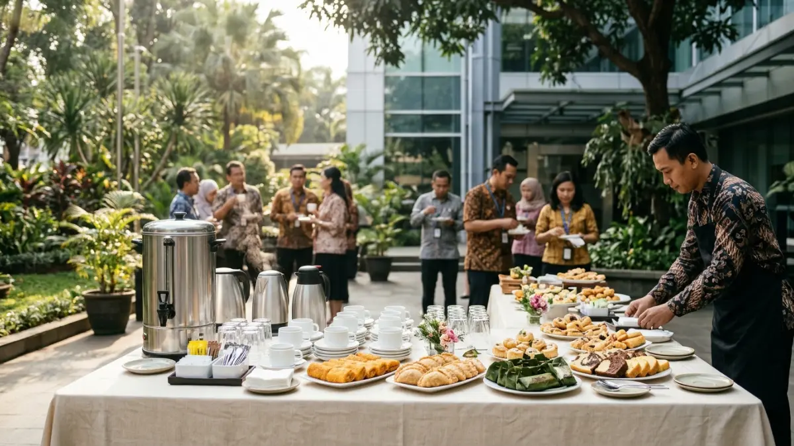

Coffee break untuk meeting outdoor adalah jeda minum kopi dan camilan di ruang terbuka yang direncanakan agar peserta tetap segar, fokus, dan nyaman selama rapat.
- Coffee break untuk meeting outdoor perlu direncanakan dari sisi waktu, cuaca, menu, alur layanan, dan keamanan makanan.
- Survei Jakpat pada April 2026 mencatat 72 persen responden Indonesia mengonsumsi kopi dalam enam bulan terakhir, sehingga kopi relevan bagi sebagian besar peserta.
- Penelitian Stanford 2014 menemukan bahwa berjalan kaki meningkatkan output kreatif dibandingkan duduk, sehingga rapat di ruang terbuka memberi nilai tambah.
- Produk pangan yang berada dalam kisaran suhu lima hingga enam puluh derajat Celsius tidak diperkenankan untuk ditinggalkan melampaui periode dua jam, dan hanya dibatasi pada satu jam apabila kondisi suhu lingkungan melampaui tiga puluh dua derajat Celsius.
- Selalu sediakan air putih dan minuman non-kafein agar semua peserta terlayani.
DAFTAR ISI
- 1. Apa Itu Coffee Break untuk Meeting Outdoor?
- 2. Mengapa Meeting Outdoor Perlu Coffee Break yang Terencana?
- 3. Bagaimana Alur Coffee Break Outdoor yang Efektif?
- 4. Faktor Apa yang Perlu Dipertimbangkan Sebelum Menyiapkannya?
- 5. Bagaimana Menjaga Makanan dan Minuman Tetap Aman di Luar Ruangan?
- 6. Bagaimana Perbandingan Coffee Break Outdoor dan Indoor?
- 7. Apa Saja Kesalahan Umum dalam Menyiapkan Coffee Break Outdoor?
- 8. Bagaimana Tips Praktis agar Coffee Break Outdoor Berjalan Lancar?
- 9. Kesimpulan
- 10. FAQ
1. Apa Itu Coffee Break untuk Meeting Outdoor?
Coffee break untuk meeting outdoor adalah sesi istirahat singkat di area terbuka yang menyajikan kopi, teh, air putih, dan camilan ringan bagi peserta rapat.
Konsep ini berlaku untuk rapat tim, workshop, pelatihan, rapat lapangan, hingga gathering perusahaan yang digelar di luar ruangan.
Durasinya umumnya 15 sampai 30 menit dan ditempatkan di tengah agenda. Coffee break berbeda dari makan siang karena menunya ringan dan penyajiannya cepat.
Penyelenggara coffee break meeting outdoor biasanya adalah tim HRD, panitia acara, atau asisten kantor.
Peserta yang paling terbantu adalah mereka yang mengikuti agenda berdurasi lebih dari dua jam, karena energi dan konsentrasi cenderung menurun seiring waktu.
Batasan utamanya ada pada faktor lingkungan. Cuaca, kebisingan, dan keterbatasan fasilitas dapat memengaruhi kualitas layanan, sehingga rencana cadangan wajib disiapkan sejak awal.
2. Mengapa Meeting Outdoor Perlu Coffee Break yang Terencana?
Coffee break terencana menjaga energi dan konsentrasi peserta meeting outdoor, yang menghadapi panas, angin, dan gangguan lingkungan sehingga lebih cepat lelah.
Kopi sudah menjadi bagian rutinitas masyarakat Indonesia. Survei Jakpat yang dilakukan pada 22 sampai 24 April 2026 terhadap 1.238 responden menemukan bahwa 58 persen responden minum kopi setidaknya satu kali setiap hari.
Databoks Katadata juga melaporkan bahwa 72 persen responden mengonsumsi minuman berperasa berupa kopi dalam enam bulan terakhir pada April 2026. Artinya, menu kopi hampir pasti dibutuhkan oleh sebagian besar peserta.
Dari sisi produktivitas, penelitian Marily Oppezzo dan Daniel Schwartz dari Stanford University yang terbit pada April 2014 di Journal of Experimental Psychology: Learning, Memory and Cognition menemukan bahwa peserta yang berjalan menghasilkan ide lebih kreatif daripada peserta yang duduk, baik di dalam maupun di luar ruangan.
Sejumlah ringkasan penelitian itu menyebut peningkatan output kreatif rata-rata sekitar 60 persen. Hasil ini tidak menjadikan coffee break sebagai obat produktivitas, tetapi menunjukkan bahwa suasana terbuka dan gerak ringan memberi manfaat nyata.
Manfaat praktis lain meliputi suasana yang lebih santai, interaksi antarpeserta yang lebih natural, dan kesempatan untuk meregangkan badan.
Risikonya ada pada paparan panas, makanan yang cepat basi, dan gangguan serangga, sehingga perencanaan menjadi penentu.

Stasiun kopi dan camilan ringan yang tertata rapi dengan termos dan wadah tertutup untuk menjaga kualitas sajian selama coffee break meeting outdoor. (Ilustrasi)3. Bagaimana Alur Coffee Break Outdoor yang Efektif?
Alur coffee break outdoor yang efektif terdiri dari penentuan waktu jeda, penyiapan stasiun layanan, pengaturan arus peserta, pengendalian durasi, dan pembersihan area setelah acara selesai.
- Tentukan titik jeda. Letakkan coffee break di tengah sesi, misalnya setelah 60 sampai 90 menit materi, agar peserta tidak kehilangan fokus.
- Siapkan stasiun layanan. Pisahkan area minuman, camilan, dan peralatan kotor supaya antrean tidak menumpuk.
- Atur arus peserta. Sediakan dua titik layanan jika peserta banyak, dan beri petunjuk arah yang jelas.
- Kendalikan durasi. Gunakan pewaktu atau pengumuman singkat agar sesi lanjutan dimulai tepat waktu.
- Bersihkan area. Kumpulkan sampah, buang sisa makanan yang sudah terlalu lama di suhu ruang, dan rapikan perlengkapan.
4. Faktor Apa yang Perlu Dipertimbangkan Sebelum Menyiapkannya?
Faktor utama coffee break untuk meeting outdoor adalah cuaca, waktu, jumlah peserta, kebutuhan diet, serta lokasi dengan naungan, air bersih, dan listrik.
Bagaimana Pengaruh Cuaca dan Waktu?
Cuaca menentukan jenis menu dan perlengkapan. Pada hari panas, minuman dingin dan naungan menjadi prioritas, sedangkan pada cuaca berangin, penutup makanan dan pemberat taplak diperlukan. Jadwalkan acara pada jam yang tidak terlalu terik, dan siapkan tenda atau area teduh sebagai cadangan.
Berapa Banyak Peserta yang Akan Dilayani?
Jumlah peserta memengaruhi jumlah titik layanan, volume minuman, dan jumlah tenaga pelayanan. Hitung kebutuhan dengan rumus yang jelas dan sisakan cadangan secukupnya.
Seperti Apa Lokasi yang Ideal?
Lokasi ideal memiliki naungan, permukaan datar, akses ke air bersih, dan jarak yang dekat dengan area rapat. Pastikan juga ada jalur untuk peserta dengan mobilitas terbatas dan tempat sampah yang cukup agar area tetap bersih.
5. Bagaimana Menjaga Makanan dan Minuman Tetap Aman di Luar Ruangan?
Makanan mudah rusak tidak boleh berada di suhu 5 sampai 60 derajat Celsius lebih dari dua jam, atau satu jam bila udara melebihi 32 derajat.
USDA Food Safety and Inspection Service menjelaskan bahwa bakteri dapat berlipat ganda dalam waktu sekitar 20 menit pada makanan mudah rusak yang berada di zona suhu berbahaya.
Karena itu, makanan dingin perlu disimpan dalam wadah dengan es, sedangkan makanan hangat perlu dijaga tetap panas dengan pemanas atau wadah penahan panas.
Pada coffee break meeting outdoor, pilih camilan yang relatif stabil pada suhu ruang, seperti kue kering, roti tanpa krim, dan buah utuh.
Sebaiknya menghindari konsumsi hidangan yang mengandung santan, mayones, atau susu segar yang telah dibiarkan terbuka tanpa penutup.
6. Bagaimana Perbandingan Coffee Break Outdoor dan Indoor?
Coffee break outdoor menawarkan suasana segar dan interaksi santai, sedangkan coffee break indoor lebih mudah dikendalikan suhu, kebersihan, dan listriknya.
| Aspek | Coffee Break Outdoor | Coffee Break Indoor |
|---|---|---|
| Suasana | Segar, terbuka, santai | Tenang, formal |
| Kontrol suhu | Terbatas, bergantung cuaca | Mudah dikendalikan |
| Risiko makanan | Lebih tinggi pada cuaca panas | Lebih rendah |
| Kebutuhan perlengkapan | Tenda, wadah pendingin, penutup makanan | Meja dan perlengkapan standar |
| Interaksi peserta | Cenderung lebih cair | Cenderung lebih terstruktur |
Secara umum, coffee break outdoor cocok untuk workshop kreatif, gathering, dan sesi brainstorming. Coffee break indoor lebih tepat untuk rapat formal, presentasi yang membutuhkan layar, atau saat cuaca tidak mendukung.
7. Apa Saja Kesalahan Umum dalam Menyiapkan Coffee Break Outdoor?
Kesalahan umum meliputi mengabaikan cuaca, menyajikan makanan mudah basi, tidak menyediakan opsi non-kafein, menyiapkan porsi tanpa perhitungan, dan tidak menunjuk penanggung jawab lapangan.
- Mengabaikan rencana cadangan. Hujan mendadak dapat membuat seluruh acara berantakan bila tidak ada tenda atau ruang pengganti.
- Menyajikan makanan terlalu lama di luar. Makanan yang dibiarkan melewati batas waktu aman meningkatkan risiko keracunan makanan.
- Hanya menyediakan kopi. Peserta yang tidak minum kafein, sedang hamil, atau memiliki alergi perlu pilihan lain.
- Tidak menghitung porsi. Kekurangan konsumsi membuat antrean panjang, sedangkan kelebihan menambah limbah.
- Tidak memikirkan kebersihan. Tanpa tempat sampah dan tempat cuci tangan, area cepat kotor dan mengundang serangga.
8. Bagaimana Tips Praktis agar Coffee Break Outdoor Berjalan Lancar?
Tips paling efektif untuk coffee break outdoor adalah membuat daftar perlengkapan, menunjuk penanggung jawab, memilih menu tahan cuaca, mengatur durasi tegas, dan menyediakan minuman non-kafein.
- Buat daftar periksa perlengkapan. Catat termos, wadah pendingin, gelas, tisu, penutup makanan, tempat sampah, dan pembersih tangan.
- Tunjuk satu penanggung jawab lapangan. Satu orang yang memantau waktu, suhu makanan, dan kebersihan mencegah tanggung jawab saling lempar.
- Pilih menu yang stabil. Dahulukan camilan yang tahan suhu ruang selama jam acara.
- Batasi asupan kafein. Otoritas Keamanan Pangan Eropa (EFSA) pada 2015 menyimpulkan bahwa konsumsi kafein hingga 400 mg per hari dan dosis tunggal hingga 200 mg tidak menimbulkan masalah keamanan bagi orang dewasa sehat. Ibu hamil disarankan tidak melebihi 200 mg per hari. Informasi ini bersifat umum, dan peserta dengan kondisi kesehatan khusus sebaiknya berkonsultasi dengan tenaga medis.
- Kurangi sampah. Gunakan gelas yang dapat dipakai ulang dan sediakan tempat pemilahan sampah.
9. Kesimpulan
Coffee break untuk meeting outdoor berhasil bila direncanakan dengan matang. Tentukan titik jeda yang tepat, pilih menu yang tahan cuaca, jaga keamanan makanan, hitung porsi dengan rumus yang jelas, dan siapkan rencana cadangan untuk cuaca buruk.
Dengan persiapan itu, peserta tetap segar, fokus, dan nyaman, sementara penyelenggara terhindar dari risiko yang tidak perlu.